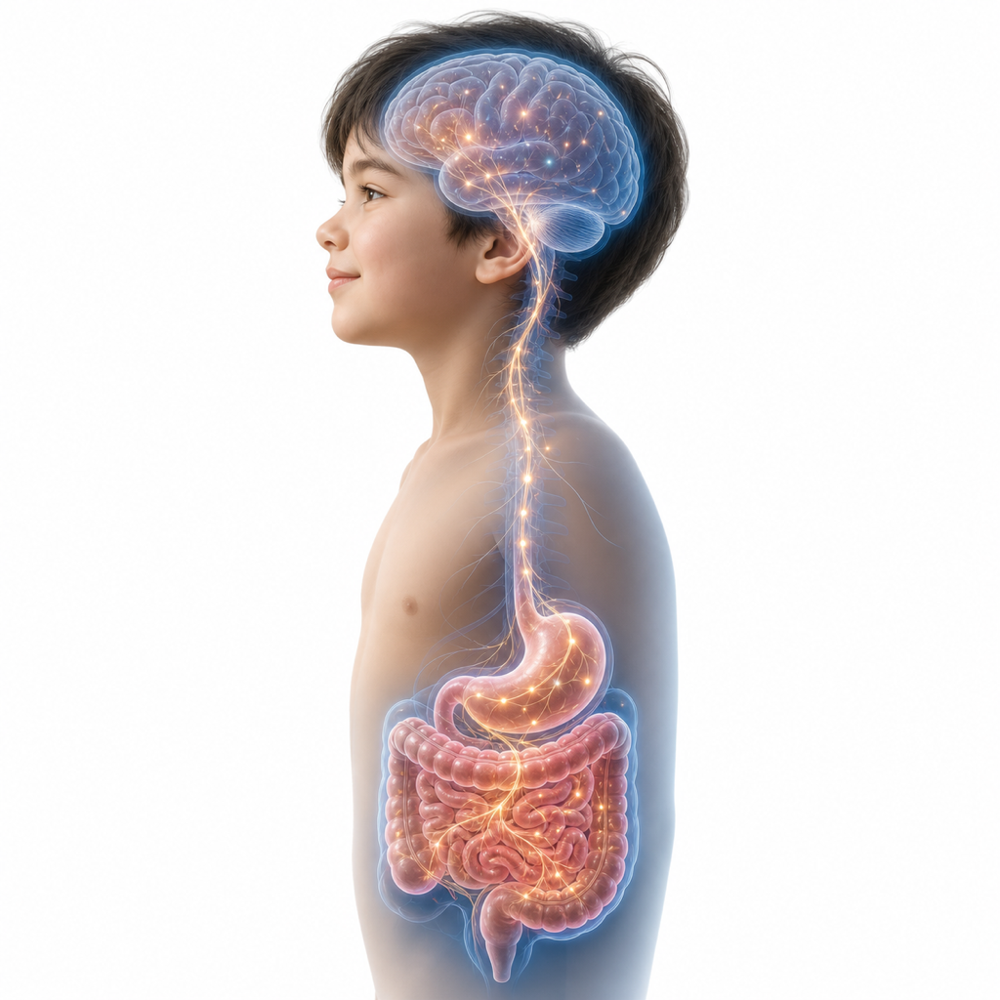
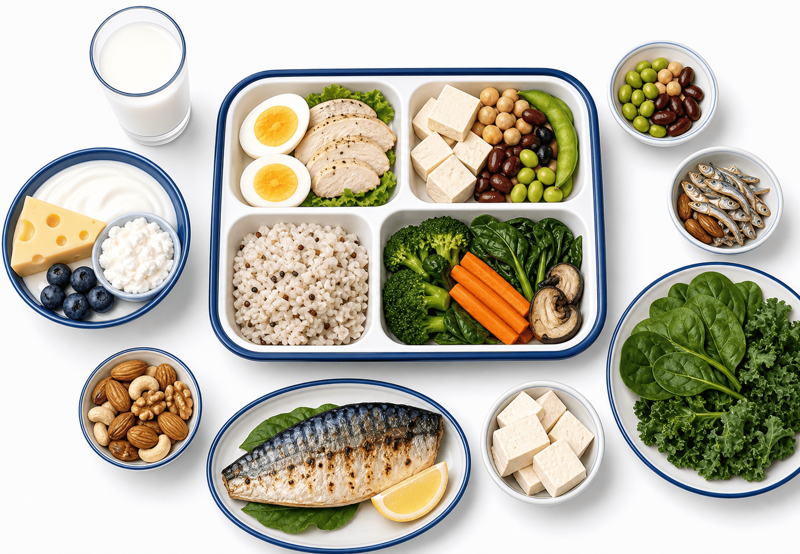
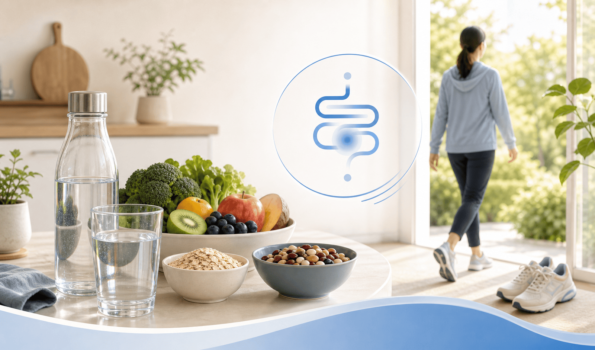

아이가 자꾸 배가 아파요
검사는 정상인데, 왜 그럴까요?
소아 기능성 복통·과민성 장 증후군 (FAP · IBS) — 약 없이 식사와 생활습관으로 편안해지는 근거 기반 관리
대부분은 위험한 병이 아닙니다
검사에서 이상이 없는 반복성 복통은 대개 '기능성'이며, 시간과 좋은 생활습관으로 대다수가 호전됩니다
기능성 복통과 IBS — 뇌-장 축의 문제입니다
검사에 나오지 않는 '진짜' 통증 (Disorders of Gut-Brain Interaction)
장의 신경이 예민해지면, 정상적인 장 운동이나 가스도 뇌에서 심한 통증으로 느껴집니다. 이것을 '장이 예민해진 상태(내장 과민성)'라고 합니다.
"예민한 성격"이나 "꾀병" 때문이 아니라 의학적으로 입증된 뇌-장 신경의 반응 변화이며, 부모의 잘못도 아닙니다. 스트레스·긴장·불규칙한 생활·수면 부족, 그리고 특정 음식이 통증을 더 자주, 더 세게 만드는 '방아쇠'가 될 수 있습니다. 그래서 장 자체를 고치기보다 식사·생활을 다듬어 뇌-장 축의 과민 반응을 가라앉히는 접근이 더 효과적입니다.

반복되는 복통이 아이에게 남기는 것들
통증 그 자체보다, 아이의 일상과 마음에 미치는 영향이 더 클 수 있습니다
왜 '먹는 것'과 '생활 리듬'이 중요할까요?
예민한 장은 음식·식사 시간·생활 리듬에 크게 반응합니다 — 약을 늘리기 전에 먼저 다듬을 부분
무엇을·언제·어떻게 먹는지가 통증의 빈도와 세기를 바꿉니다. 특정 음식이 장에서 가스·수분을 늘리거나 장을 자극하면, 예민한 장이 이를 통증으로 증폭합니다.
반대로 규칙적인 식사·충분한 수분·안정된 생활 리듬은 장의 과민 반응을 가라앉힙니다. 그래서 검사가 정상인 소아 복통에서는 약물에 앞서 식사와 생활을 먼저 조절하는 것이 관리의 기본입니다. 부작용이 없고, 온 가족이 함께 실천할 수 있는 안전한 첫걸음입니다.

도움이 되는 식사 습관 6가지
거창한 식이요법이 아니라, 오늘부터 집에서 바로 실천할 수 있는 기본기입니다
배를 더 아프게 할 수 있는 음식 — 줄여보세요
아이마다 방아쇠는 다르지만, 아래 음식들은 예민한 장을 자극하는 흔한 원인입니다
우리 아이만의 방아쇠 찾기 — 음식·통증 일기
2~4주만 꾸준히 적으면, 반복되는 음식·상황 패턴이 눈에 보입니다
우리 아이에게 어떻게 적용할까요?
경고 신호(10페이지)가 없다면, 검사·약물에 앞서 식사·생활부터 단계적으로 시도합니다

이런 신호가 있으면, 식사 조절보다 검사가 먼저입니다
아래 중 하나라도 있으면 기능성으로 단정하지 말고 반드시 추가 평가가 필요합니다
오늘 꼭 기억할 7가지
소아 기능성 복통·IBS는 이해와 식사·생활 관리로 충분히 좋아집니다
대부분 좋아집니다 —
식사와 생활 관리로 더 편안하게
안심과 이해에서 시작해, 아이에게 맞는 식사 조절과 생활 계획을 함께 찾아가겠습니다 — 궁금한 점은 언제든 문의해 주세요
광교중앙로 298, 4층
토요일 08:30~13:30
같은 자료를 다시 볼 수 있어요